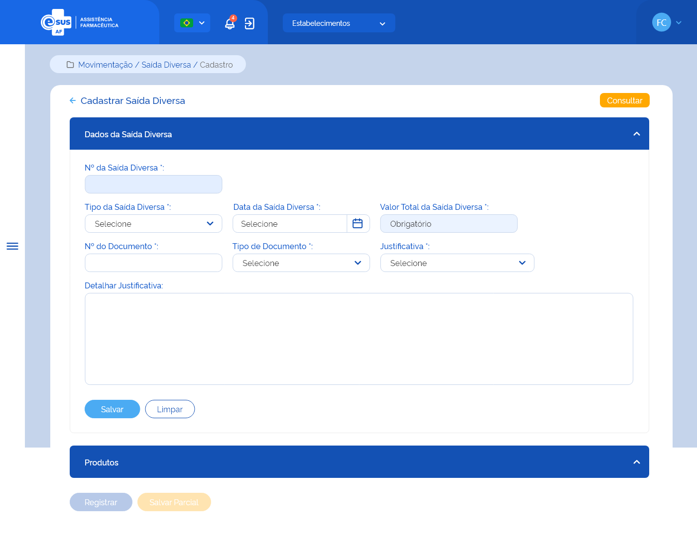
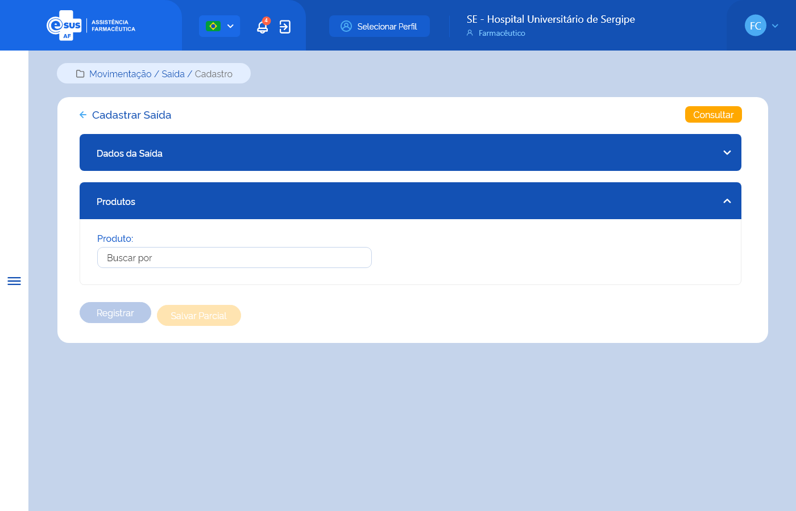
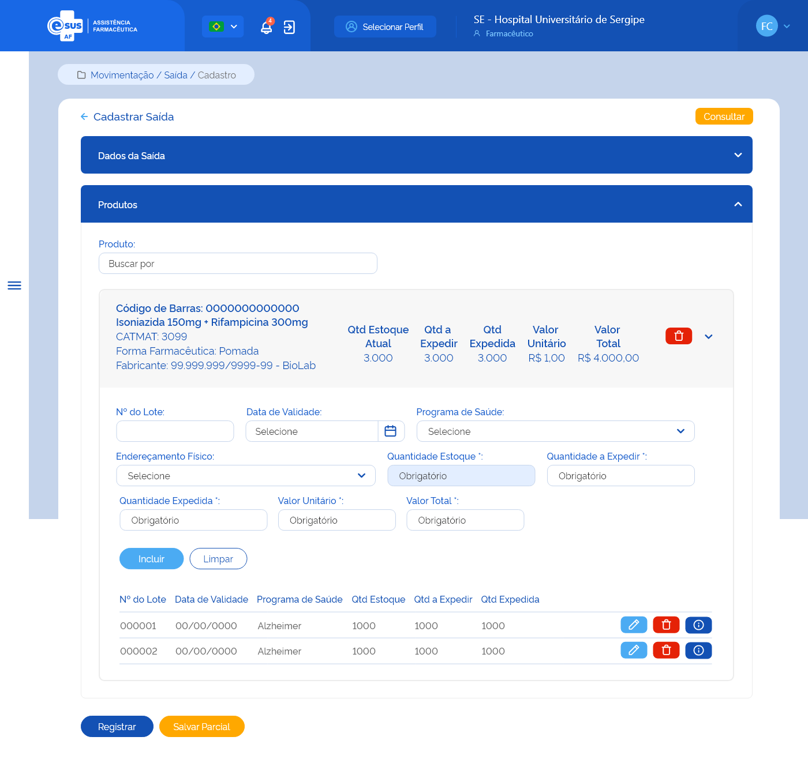
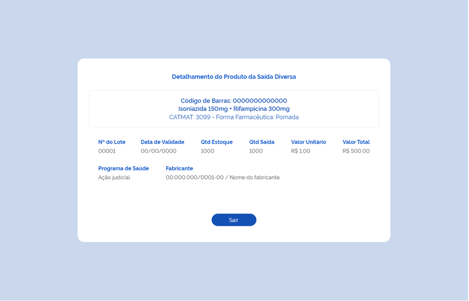

ETE024 - Cadastrar Saída
Descrição (modelo história de usuário)
Como usuário quero cadastrar uma saída de produto(s) para retirá-lo(s) do estoque do estabelecimento de saúde logado.
Protótipo 001

Elementos de Tela
- Bread Crumb – “Movimentação / Saída / Cadastro”
- Título da página – “Cadastrar Saída”
- “Seta” – M - retorna para a Tela de Consultar Saída
- “Consultar” – BT - retorna para a Tela de Consultar Saída
- Título da sessão 1 – “Dados da Saída”
- Nº da Saída – N (36) – Desabilitado para edição
- Tipo de Saída – SU / AC
- Data da Saída – D (DD/MM/AAAA)
- Valor Total Saída – N (13,9) (R$ 99999999999999,999999999) - Desabilitado para edição
- CNES/CNPJ do Estabelecimento de Destino – N (7/14)
- Lupa – M
- Estabelecimento de Destino – A (20)
- Departamento de Destino – SU /AC
- Tipo de Documento* – SU / AC
- Nº do Documento* – A (20)
- Data do Documento* - D (DD/MM/AAAA)
- Justificativa* – SU / AC
- Detalhes Justificativa – A (4000) - contador regressivo
- “Salvar” – BT
- “Limpar” – BT
- Título da sessão 2 – “Produtos” - desabilitado
- “Registrar” – BT - desabilitado
- “Salvar Parcial” – BT - desabilitado
Legenda
TIPO: A = Alfanumérico, N = Numérico, D = Data, M = Imagem, BT = Botão, LK = Link, SU = Seleção Única, SM = Seleção Múltipla, AC = Autocomplete, * = Obrigatório.
Critérios de Aceite
- O usuário somente pode acessar a funcionalidade caso tenha permissão; RGN001
- O acesso à funcionalidade é dado através do menu lateral no item “Movimentação”, subitem “Saída”, na tela “Consultar Saída” quando for acionada a opção “Novo”;
- O sistema deve apresentar os seguintes campos: Nº da Saída, Tipo de Saída, Data da Saída, Valor Total Saída, CNES/CNPJ do Estabelecimento de Destino, opção Lupa Estabelecimento de Destino, Departamento de Destino, Tipo de Documento, Nº do Documento, Justificativa, Detalhar Justificativa e as opções “Salvar” e “Limpar”;
- No campo “Tipo de Saída” o sistema deve apresentar as opções: Ajuste de Estoque, Amostra, Exposição e Análise, Apreensão Sanitária, Distribuição sem Requisição, Empréstimo, Perda, Requisição, Roubo, Saída para Departamento, Transferência, Usuário SUS não Identificado, Validade Vencida. Exceto os tipos criados para saídas geradas automaticamente pelo sistema: “Saída por Estorno de Entrada” e “Saída por Dispensação”;
- Quando o usuário selecionar no campo “Tipo de Saida” a opção: Ajuste de Estoque, Amostra, Exposição e Análise, Apreensão Sanitária, Perda, Usuário SUS Não Identificado, Validade Vencida, o sistema deve preencher os campos “CNES/CNPJ do Estabelecimento de Destino" e "Estabelecimento de Destino” com os dados do estabelecimento logado e mantendo-os desabilitados para edição e desabilitar para edição o campo: “Departamento de Destino”; RGN065
- Quando o usuário selecionar no campo “Tipo de Saida” a opção: "Distribuição sem Requisição" ou “Empréstimo” ou “Requisição” ou "Transferência", o sistema deve habilitar e tornar obrigatório o preenchimento dos campos "CNES/CNPJ do Estabelecimento de Destino" e "Estabelecimento de Destino” e manter desabilitado para edição o campo “Departamento de Destino”; RGN065
- O sistema deve verificar se CNES/CNPJ do Estabelecimento de Destino informado é igual ao do CNES/CNPJ do Estabelecimento logado. Caso sim, deve emitir mensagem de alerta ao usuário; RGN064 MSG095
- Quando o usuário acionar a opção “Lupa” após informar o CNES/CNPJ do Estabelecimento de Destino, o sistema deve recuperar e apresentar o nome fantasia do estabelecimento dentre os cadastrados na instância.
- Quando o usuário selecionar no campo “Tipo de Saida” a opção: "Saída para Departamento", o sistema deve preencher os campos “CNES/CNPJ do Estabelecimento de Destino" e "Estabelecimento de Destino” com os dados do estabelecimento logado e mantendo-os desabilitados para edição e habilitar e tornar obrigatório a seleção de um item no campo "Departamento de Destino"; RGN065
- No campo "Departamento de Destino", o sistema deve recuperar e apresentar para seleção a relação dos departamentos cadastrados para o estabelecimento logado.
- O campo “Data da Saída” dever ser preenchido automaticamente com a data atual e desabilitado para edição;
- O campo “Valor Total da Saída” deve ser desabilitado para edição, calculado automaticamente somando todos os valores totais dos produtos adicionados à saída e apresentado em reais (R$) com até 2 dígitos após a virgula, realizando o arredondamento do valor se necessário; RGN038 RGN028
- No campo “Tipo de Documento” o sistema deve apresentar as opções: Aviso, Boletim, Carta, Certidão, Circular, Comprovante, Contrato, Convênio, Decreto, Despacho, Edital, Fax, Guia, Guia De Remessa, Instrução Normativa, Memorando, Mensagem, Nota Fiscal, Nota Fiscal Eletrônica, Ofício, Ordem De Serviço, Parecer, Portaria, Prescrição Médica, Requerimento, Requisição, Resolução;
- No campo “Justificativa” o sistema deve apresentar as opções: Diferença de Estoque, Quebra do produto/medicamento, Recebimento maior que a demanda, Recebimento próximo da validade, Roubo, Sistema Inoperante, Outros;
-
Quando o usuário acionar a opção de “Salvar”, o sistema deve verificar se:
- Existe uma saída com o mesmo tipo de saída, tipo e número de documento e justificativa de uma saída registrada ou em preenchimento para o estabelecimento. Caso sim, o sistema deve apresentar uma mensagem de alerta ao usuário. RGN044 MSG038
Atendendo a validações, o sistema grava o registro da saída com estado “Ativo” e a situação “Em preenchimento”, mantêm os campos habilitados para edição, permanece na tela de cadastro da saída e apresenta o campo “Produto(s)”; MSG031 RGN045 RGN005
-
Quando o usuário acionar a opção “Limpar”, o sistema deve apresentar a mensagem de alerta ao usuário. Caso confirme a ação, limpar os campos preenchidos e permanecer na tela de cadastro da saída. Caso a ação não seja confirmada, não limpar os dados informados e permanecer na tela de cadastro da saída; MSG065
- Quando o usuário acionar a opção de “Voltar” ou “Consultar”, o sistema deve apresentar a mensagem de alerta ao usuário. Caso confirme a ação, retornar à tela de consulta as saídas e não salvar as edições realizadas. Caso a ação não seja confirmada, permanece na tela de cadastro da saída; MSG006
- O sistema deve gravar a data, hora e CPF e nome do usuário que a executou qualquer ação de alteração no estado do registro. RGN005
Protótipo 002

Elementos de tela
- Bread Crumb – “Movimentação / Saída / Cadastro”
- Título da página – “Cadastrar Saída”
- “Seta” – M - retorna para a Tela de Consultar Saída
- “Consultar” – BT - retorna para a Tela de Consultar Saída
- Título da sessão 1 – “Dados da Saída”
- Título da sessão 2 – “Produtos”
- Produto* – A (500) / AC
- “Registrar” – BT - desabilitado
- “Salvar Parcial” – BT - desabilitado
Legenda
TIPO: A = Alfanumérico, N = Numérico, D = Data, M = Imagem, BT = Botão, LK = Link, SU = Seleção Única, SM = Seleção Múltipla, AC = Autocomplete, * = Obrigatório.
Critérios de Aceite
- No campo “Produto” quando o usuário informar:
- O Código de Barras do produto, o sistema deve:
- O Princípio Ativo ou Nome Comercial de um Medicamento ou Descrição do Produto para Saúde, o sistema deve:
- O usuário deve selecionar o produto que deseja adicionar na lista produtos ativos no sistema;
- O sistema não deve permitir adicionar um produto já relacionado à saída. MSG034
Protótipo 003

Elementos de tela
- Bread Crumb – “Movimentação / Saída / Cadastro”
- Título da página – “Cadastrar Saída”
- “Seta” – M - retorna para a Tela de Consultar Saída
- “Consultar” – BT - retorna para a Tela de Consultar Saída
- Título da sessão 1 – “Dados da Saída”
- Título da sessão 2 – “Produtos”
- Produto* – A (500) / AC
- Lista de produtos da saída - desabilitados para edição:
- Código de Barras – N (13)
- Descrição do Produto – A (500)
- CATMAT – N (6)
- Forma Farmacêutica – A (20)
- Fabricante – A (80) <9999999> / <99.999.999/9999-99>-
- Qtd Estoque Atual – N
- Qtd a expedir – N
- Qtd Espedida – N
- Valor Unitário – N (6,9) (R$ 999999,999999999)
- Valor Total – N (13,2) (R$ 99999999999999,99)
- “Excluir” – BT
- “Expandir/Retrair” – M
- Detalhe Produto
- Nº do Lote* – A (20)
- Data de Validade* – D (DD/MM/AAAA)
- Programa de Saúde* – SU / AC / A
- Endereçamento Físico* – SU / AC / A
- Quantidade Estoque* – N - desabilitado para edição
- Quantidade a expedir* – N
- Quantidade Expedida* – N
- Valor Unitário* – N (6,9) (R$ 999999,999999999)
- Valor Total* – N (13,2) (R$ 99999999999999,99)
- “Incluir” – BT
- “Limpar” – BT
- Lista detalhe produto
- Nº do Lote
- Data de Validade
- Programa de Saúde
- Qtd Estoque
- Qtd a Expedir
- Qtd Expedida
- “Editar” – BT
- “Excluir” – BT
- “Detalhar – BT - direciona para tela com os dados do detalhe do produto
- “Registrar” – BT
- “Salvar Parcial” – BT
Legenda
TIPO: A = Alfanumérico, N = Numérico, D = Data, M = Imagem, BT = Botão, LK = Link, SU = Seleção Única, SM = Seleção Múltipla, AC = Autocomplete, * = Obrigatório.
Critérios de Aceite
- Quando o usuário adicionar o produto, o sistema deve:
- Verificar se existe estoque para o produto informado no estabelecimento logado. Caso não, o sistema emite um alerta ao usuário e não permite adicioná-lo na lista dos produtos, exceto se no campo “Tipo de Saída” for selecionada a opção: "Distribuição sem Requisição" ou “Requisição” ou "Usuário SUS não Identificado"; RGN042 MSG035
- Verificar a opção informada no campo “Tipo de Saída”, se:
- "Distribuição sem Requisição", “Requisição”, "Usuário SUS não Identificado", o sistema deve permitir incluir produtos com estoque igual a O (zero);RGN034
- “Validade Vencida”, o sistema verifica se existem lotes do produto vencidos ou a vencer nos próximos 90 dias em estoque. Caso não exista, emite um alerta ao usuário e limpa os campos preenchidos;RGN034 MSG033
- “Ajuste de Estoque”, “Apreensão Sanitária”, “Distribuição sem Requisição”, “Empréstimo”, “Requisição”, “Saída para Departamento”, “Transferência” ou “Usuário SUS Não Identificado”, o sistema considera os lotes com a data de validade igual ou superior a data atual; RGN034
- “Amostra”, “Exposição e Análise”, “Perda” ou “Roubo”, o sistema considera todos os lotes independente da data de validade. RGN034
- O sistema deve apresentar a lista de produtos adicionados à saída por ordem alfabética. A lista será expansiva, permitindo o preenchimento dos campos de detalhamento do produto; RGN023
- O(s) produto(s) adicionado(s) à saída pode(m) ser excluído(s) desde que não tenha(m) detalhamento(s) vinculado(s) a ele; RGN035
- O campo “Qtd Estoque Atual” deve ser desabilitado para edição e carregado automaticamente com o saldo do produto em estoque do estabelecimento logado, no momento, independente de lote, validade, fabricante, programa de saúde e endereçamento físico; RGN036
- O campo “Qtd a Expedir” deve ser desabilitado para edição e o sistema deve:
- Recuperar automaticamente a quantidade informada no campo “Qtd a Expedir” quando apenas um detalhamento do produto for adicionado;
- Calcular automaticamente somando todas as quantidades a expedir informadas nos detalhamentos adicionados ao produto; RGN039
- O campo “Qtd Expedida” deve ser desabilitado para edição e o sistema deve:
- Recuperar automaticamente a quantidade informada no campo “Qtd Expedida” quando apenas um detalhamento do produto for adicionado;
- Calcular automaticamente somando todas as quantidades expedidas informadas nos detalhamentos adicionados ao produto;RGN066
- O campo “Valor Unitário” deve ser desabilitado para edição, calculado automaticamente através de uma média simples dos valores unitários informados na(s) entrada(s) deste produto, independente de lote, validade, fabricante, programa de saúde, endereçamento físico e apresentado em reais (R$) com até 9 dígitos após a virgula; RGN040
- O campo “Valor Total” deve ser desabilitado para edição, calculado automaticamente através da fórmula: Quantidade Expedida X Valor Unitário do produto e apresentado em reais (R$) com até 2 dígitos após a virgula, realizando o arredondamento do valor se necessário; RGN041 RGN028
- Após adicionar o produto à Saída, no detalhamento, o sistema deve:
- Apresentar os campos: Nº do Lote, Data de Validade, Programa de Saúde, Endereçamento Físico, Qtd a expedir e Qtd Expedida habilitados para edição e os campos: Qtd Estoque, Valor Unitário e Valor Total desabilitados para edição;
- No campo “Valor Unitário”, calcular automaticamente através de uma média simples dos valores unitários informados na(s) entrada(s) deste produto, independente de lote, validade, fabricante, programa de saúde, endereçamento físico e apresentá-lo em reais (R$) com até 9 dígitos após a virgula; RGN040
- No campo “Valor Total”, calcular automaticamente através da fórmula: Quantidade Expedida X Valor Unitário do produto e apresentá-lo em reais (R$) com até 2 dígitos após a virgula, realizando o arredondamento do valor se necessário; RGN041RGN028
- No campo “Qtd Estoque”, recuperar e apresentar o saldo em estoque do produto à medida que for selecionado os campos “Lote”, ‘Data de Validade”, “Programa de Saúde” e “Endereçamento Físico”;
- No campo “Qtd a Expedir”, permitir informar um valor independente do saldo em estoque do produto; RGN067
- Quando o usuário selecionar um lote, o sistema deve recuperar e apresentar as respectivas datas de validades, programas de saúde e endereçamentos físicos para seleção;
- Quando o usuário adicionar um detalhamento do produto à Saída, o sistema deve verificar se:
- Já existe um detalhamento com o mesmo Lote, Data de Validade, Programa de Saúde e Endereçamento Físico adicionado ao produto. Caso sim, o sistema deve emitir um alerta ao usuário e não permitir adicioná-lo na lista de detalhamentos; MSG036
- A quantidade expedida é inferior a 1. Caso sim, o sistema deve emitir um alerta ao usuário e limpar o valor informado no campo, exceto se no campo “Tipo de Saída” for selecionada a opção: "Distribuição sem Requisição" ou “Requisição” ou "Usuário SUS não Identificado"; MSG025
- A quantidade expedida para o produto, lote, data de validade, programa de saúde e endereçamento físico é superior a quantidade disponível no estoque do estabelecimento, o sistema deve emitir um alerta ao usuário e limpar o valor informado no campo. MSG037 RGN043
- O sistema deve permitir adicionar:
- Mais de um detalhamento ao produto, permitindo a saída do mesmo produto com lotes, datas de validade, programas de saúde e endereçamentos físicos diferentes;
- Um detalhamento de produto com estoque igual a O (zero) se no campo “Tipo de Saída” for selecionada a opção: "Distribuição sem Requisição" ou “Requisição” ou "Usuário SUS não Identificado";
- O(s) detalhamento(s) vinculado(s) ao produto pode(m) ser excluído(s);
-
Quando o usuário acionar a opção “Registrar”, o sistema deve verificar se:
- Existe ao menos um produto relacionado à Saída. Caso não, o sistema deve apresentar uma mensagem de alerta ao usuário; MSG040
- O detalhamento de todos os produtos da Saída foi incluído. Caso não, o sistema deve apresentar uma mensagem de alerta ao usuário;MSG029
Atendendo as validações, o sistema efetiva o cadastro da saída, grava o estado do registro como “Ativo” e a situação como “Registrada”, debita os produtos do estoque do estabelecimento, considerando lote, validade e programa de saúde, apresenta a mensagem de sucesso e retorna à tela de consulta às saídas apresentando este registro como o primeiro da relação das saídas cadastradas para o estabelecimento; MSG039 RGN045 RGN005
-
O sistema, identificando que uma Saída de produto(s) foi registrada, deve debitar a quantidade no saldo deste(s), considerando lote, data de validade, programa de saúde e endereçamento físico e atualizar a posição de estoque do estabelecimento que realizou a Saída; RGN046
-
Quando o usuário acionar a opção de “Salvar Parcial”, o sistema deve verificar se:
- Existe ao menos um produto relacionado à Saída. Caso não, o sistema deve apresentar uma mensagem de alerta ao usuário; MSG040
- Existe ao menos um detalhamento vinculado ao(s) produto(s) da Saída. Caso não, o sistema deve apresentar uma mensagem de alerta ao usuário; MSG029
Atendendo as validações, o sistema grava o registro da saída com estado “Ativo” e a situação “Em preenchimento” e permanece na tela de cadastro da saída; MSG031 RGN005
-
Quando o usuário acionar a opção de “Voltar” ou “Consultar”, o sistema deve apresentar a mensagem de alerta ao usuário. Caso confirme a ação, retorna à tela de consulta às saídas e não salva as edições realizadas. Caso a ação não seja confirmada, permanece na tela de cadastro da saída; MSG006
- O sistema deve gravar a data, hora e CPF e nome do usuário que a executou qualquer ação de alteração no estado do registro. RGN005
Protótipo 004

Elementos de tela
- Título – “Detalhamento do Produto da Saída”
- Código de Barras
- Descrição do Produto
- CATMAT
- Forma Farmacêutica
- Nº do Lote
- Data de Validade
- Programa de Saúde
- Endereçamento Físico
- Quantidade Estoque
- Quantidade a Expedir
- Quantidade Expedida
- Valor Unitário
- Valor Total
- “Sair” – BT
Legenda
TIPO: A = Alfanumérico, N = Numérico, D = Data, M = Imagem, BT = Botão, LK = Link, SU = Seleção Única, SM = Seleção Múltipla, AC = Autocomplete, * = Obrigatório.
Critérios de Aceite
- O acesso aos dados de um detalhamento do produto da entrada é realizado quando o usuário acionar a opção “Detalhar” no cadastro da saída;
- O sistema deve recuperar e apresentar os dados relacionados ao detalhamento do produto da saída que o usuário deseja detalhar;
- Caso algum campo retornar vazio, o sistema deve apresentar a descrição “Sem informação”;
- Quando o usuário acionar a opção “Sair”, o sistema deve retornar à tela de “Cadastro da Saída”.